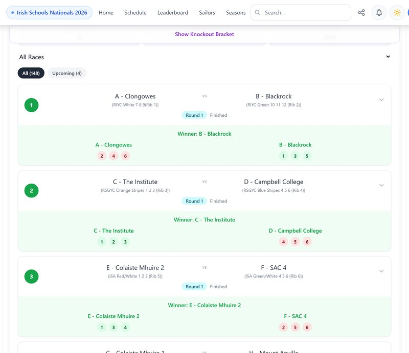

The scheduling system behind Irish team racing
I spotted the gap from inside the sport, built the fix, and now license it to clubs. It has run 19 regattas since August 2025, and Nantucket Yacht Club became the first club in the United States to use it.
teamracing.xyz